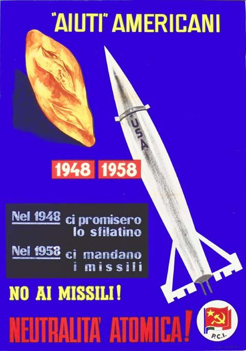
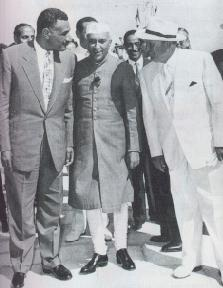
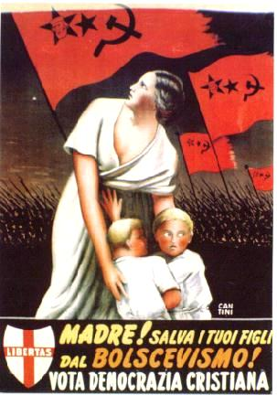
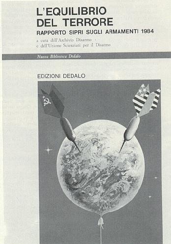
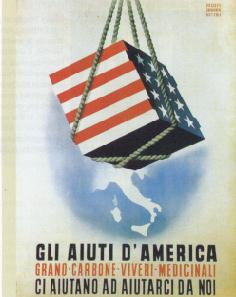
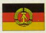
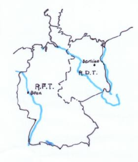
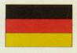
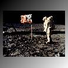

Paese comunista che non seguì l’URSS nella destalinizzazione, anzi ruppe con la Russia e si schierò dalla parte della Cina nel conflitto che oppose URSS e Cina in campo marxista. Fu per molti anni soggetta alla dittatura di Enver Hoxha che morì nel 1985.
La bomba atomica, bomba A (usata dagli americani a Hiroshima e Nagasaki nell’agosto del 1945) si basa sul principio della fissione (scissione) del nucleo di atomi di uranio o di plutonio; la bomba termonucleare o bomba all’idrogeno sul principio della fusione di atomi di idrogeno o dei suoi isotopi.
Gli Usa misero a punto la bomba H nel 1952.
L’Urss si dotò di bomba A nel 1949 e nei primi anni Cinquanta dispose anch’essa della bomba H.
Testate nucleari furono montate sui missili. Alla fine degli Settanta gli Usa, ritendendo che in Europa vi fosse una superiorità militare del Patto di Varsavia, decisero di installare in Europa occidentale missili Pershing e Cruise per far fronte agli SS-20 sovietici. Questa decisione attuata all’inizio degli anni Ottanta creò tensioni internazionali e all’interno dei paesi, come l’Italia, interessati all’installazione dei missili.
Gli arsenali nucleari strategici (1984)
(fonte Atlante strategico)
| USA | URSS | |
| Missili intercotinentali
Testate nucleari |
1037
2129 |
1398
5398 |
| Missili balistici strategici sottomarini
Testate nucleari |
592
5344 |
981
2102 |
| Missili strategici continentali superficie- superficie | 24 | 602 |
| Bombardieri strategici | 230 | 618 |
| Alleanza Atlantica | Patto di Varsavia | |
| Sottomarini nucleari d'attacco | 90 |
99 |
| Tonnellaggio delle navi da battaglia | 3385 |
2685 |
| Porta- aeromobili
Navi oltre le 2000 tonnellate |
18 348 |
4 139 |
| Tonnellaggio di navi anfibie | 759 |
141 |
| Aviazione navale | 2600 |
750 |

A Bretton Woods (New Hampshire) nel 1944 le potenze vincitrici della seconda guerra mondiale si riunirono per disegnare il futuro sistema finanziario mondiale. Esse posero alla base del sistema monetario internazionale il dollaro che, prendendo il posto della sterlina inglese, divenne la moneta di riferimento. Dal 1945 al 1971 al dollaro fu riconosciuto il gold standard exchange, cioè la convertibilità in oro. Il valore del dollaro era garantito dalle riserve auree degli Stati Uniti, ma in realtà si fondava sul primato politico ed economico degli USA.
A Bretton Woods vennero create due istituzioni finanziarie: il Fondo monetario Internazionale (FMI) e la Banca Mondiale (WB).
Il FMI ha il compito di concedere crediti a breve termine ai paesi in difficoltà a patto di impostare politiche di risanamento dei bilanci,
Durante la guerra fredda l’URSS e i paesi sotto la sua influenza rifiutarono il Piano Marshall e non entrarono nella Banca Mondiale, oggi dopo la disgregazione dell’URSS, praticamente tutte le nazioni del blocco sovietico hanno aderito alle istituzioni di Bretton Woods. Da segnalare che le due istituzioni sono finanziate con i fondi dei paesi aderenti e i paesi sono rappresentati in modo proporzionale al capitale sottoscritto.
Alla fine della guerra, come gli altri Paesi occupati dall'Armata Rossa, divenne una repubblica popolare satellite dell'URSS. Fu uo degli Stati più ligi alla volontà di Mosca. A seguito della crisi delle repubbliche popolari dopo il 1989 fu tolto dalla costituzione il ruolo guida del partito unico e furono indette nel 1990 libere elezioni. Dal 1991 è una repubblica parlamentare.
Le elezioni del 1946 portarono alla formazione di un governo di coalizione con un capo del governo comunista, Klement Gottwald, e un presidente della Repubblica socialista, Eduard Benes. Dietro pressione di Mosca, la Cecoslovacchia rifiutò il piano Marshall. Nel 1948 il ministro degli Esteri, Jan Masaryck, favorevole all’indipendenza da Mosca, morì in circostanze misteriose. Seguirono le elezioni su lista unica e le dimissioni di Benes. Gottwald divenne presidente. Nel 1968 il leader Alexander Dubcek attuò un programma di riforme economiche e riconobbe le libertà civili. Fu la cosiddetta "Primavera di Praga" che lanciò il socialismo dal volto umano. Nell’agosto dello stesso anno i carri armati sovietici posero termine a questa esperienza. Nel 1989 vi furono numerose manisfestazioni popolari e fu liberato uno scrittore, Vaclav Havel che era uno dei firmatari di Charta '77, un documento che rivendicava i diritti umani. Si formò un governo di coalizione mentre Havel divenne presidente. Nel 1993 la Cecoslovacchia a seguito di un referendum si divise in due: la Repubblica Ceca e la Repubblica Slovacca.
Nel 1949 nasce la Repubblica Popolare Cinese di ispirazione comunista, guidata da Mao Tze Tung. Essa non viene riconosciuta dagli USA fino al 1971. Negli anni '50 sono attuate la riforma agraria con la distribuzione delle terre ai contadini e la nascita di cooperative, la nazionalizzazione dell'industria e del commercio estero. Nel 1958 Mao lancia il cosiddetto "grande balzo in avanti" che comporta la concentrazione delle cooperative in unità più vaste chiamate "comuni popolari" che avrebbero dovuto essere autosufficienti dal punto di vista economico. Il grande balzo fallisce, si verificano invece carestie e si deteriorano i rapporti con i sovietici. Contro gli avversari di partito Mao scatena le giovani generazioni che prendono come guida il libretto rosso che contiene il pensiero di Mao. Si esalta la funzione delle masse, si criticano intellettuali e tecnici, professado l'integrazione di teoria e pratica. La rivoluzione culturale dura dal 1966 al 1969.
In politica estera la Cina mostra l'intenzione di costituire la potenza egemonica dell'area asiatica, occupa il Tibet, aiuta la Corea del Nord contro la Corea del Sud, e i vietnamiti contro gli americani. Si verificano conflitti con l'URSS e con l'India. Nel 1964 fa esplodere la prima bomba atomica cinese.
La corsa agli armamenti e le crisi internazionali alimentarono la paura di un conflitto atomico con conseguente distruzione dell'umanità. Tale paura si espresse in opere letterarie e cinematografiche. Come esempio valga il film del regista Stanley Kubrick, Il dottor Stranamore (Dr. Strangelove or: How I Learned to Stop Worryg and Love the Bomb), del 1964, dal romanzo Red Alert di Peter George. Un generale statunitense, il solo a conoscere il codice segreto, convinto di un complotto internazionale dei comunisti decide di ordinare ai bombardieri l'attacco nucleare all'URSS. Il presidente americano riesce in extremis a revocare l'ordine e tutti i bombardieri, meno uno, rientrano o sono abbattuti dai russi. Il bombardiere "King Kong" compie invece la sua missione scatenando la reazione sovietica. Il dr. Stranamore, ex-nazista consigliere del presidente americano afferma che tenendo cento anni nei rifugi antiatomici uomini selezionati si potrà salvare l'umanità. Il film si conclude con un grande fungo atomico e le note della canzone We'll meet again. La satira non cela comunque la genuina preoccupazione dell'apocalisse atomica.
Il bipolarismo comportò anche un grande sviluppo dei servizi segreti: la CIA statunitense e il KGB sovietico. Fiorirono romanzi ispirati al mondo delle spie, le spy stories. Un esempio è la produzione letteraria di John Le Carré. Tra i suoi numerosi romazi ricordiamo La spia che venne dal freddo (1963) che ha come scenario la Berlino della guerra fredda. Il protagonista va nella RDT per catturare il suo tradizionale avversario, ma sarà lui stesso a cadere nella trappola tesagli dai suoi superiori. Anche dai romanzi di Le Carrè sono stati tratti diversi film, come quello omonimo del romanzo citato con Richard Burton e la regia di Martin Ritt, del 1965.
Si tenne nel 1955 e vi parteciparono i leader della Jugoslavia (Tito), dell’India (Nehru) e dell’Egitto (Nasser). Venne fondato in questa occasione il Movimento dei Non Allineati che si proponeva di costituire una terza forza, che non si sarebbe schierata né con i paesi occidentali, né con i paesi comunisti guidati dall’URSS. Fu un tentativo di mettere in discussione l’assetto mondiale bipolare mondiale uscito dalla seconda guerra.

La Corea dopo la guerra era stata divisa in due parti: a nord del 38° parallelo un regime comunista, a sud un regime nazionalista appoggiato dagli americani. Nel 1950, dopo uno sconfinamento di truppe della Corea del Nord, scoppiò una guerra nella quale intervennero gli USA, sotto la bandiera dell'ONU, in appoggio alla Corea del Sud. A questo punto entrò nel conflitto anche la Cina contro gli USA. La guerra si concluse nel 1953 con il ristabilimento del confine sul 38° parallelo.
La Grecia dal 1945 al 1948 fu scossa da una guerra civile che si concluse con l’estromissione dei comunisti, messi fuori legge. Un referendum riconfermò la monarchia e nel 1950 la Grecia entrò a far parte della Nato. Nel 1963 andò al governo il socialista Papandreu che diede avvio a un programma di riforme sociali e cercò di limitare l’influenza della Nato. Dopo le dimissioni di Papandreu, avversato dalla destra, dai militari e dal re, dal 1965 al 1967 si succedettero governi deboli, nel 1967 fu attuato un golpe militare con il favore degli Usa, che instaurò nel paese una sanguinosa dittatura. Si aggravarono le tensioni con la Turchia per Cipro. Nel 1974 la Turchia occupò militarmente la parte settentrionale di Cipro. L’insuccesso militare, oltre l’opposizione interna e il discredito internazionale determinò la caduta del regime dei colonnelli.
Nel 1956 il leader egiziano Gamal Abdul Nasser decise di nazionalizzare il canale di Suez. Gran Bretagna, Francia e Israele organizzarono un intervento militare ma furono fermati da una risoluzione dell’Onu, appoggiata da USA e URSS che condannava il ricorso alla forza in Medio Oriente. Gli USA fecero pressioni su Gran Bretagna e Francia perché ritirassero le loro truppe. Nasser vide aumentare la sua popolarità e si avvicinò all’URSS.
Lo sviluppo della crisi di Suez fece comprendere che le potenze europee non potevano più fare una politica autonoma dagli USA.
Nel 1953 iniziò la rivoluzione contro il dittatore Fulgencio Batista. Dal 1957 Fidel Castro diresse la guerriglia, insieme a Ernesto Guevara, riuscendo a scacciare Batista nel 1959 e instaurando un nuovo govero che attuò la riforma agraria. el 1960, peggiorati i rapporti con gli USA, il governo dell'Avana ottenne l'appoggio economico e militare dell'URSS, al quale seguì l'embargo statuitense. Nell'anno seguente un tentativo di esuli cubani appoggiati dalla CIA di rovesciare Castro fallì e Cuba aderì all'ideale del marxismo- leninismo. L'installazione di missili sovietici a Cuba nel 1962 causò una gravissima crisi che si compose quado Kruscev ritirò i suddetti missili.
Dopo la seconda guerra mondiale si accelerò il processo di liberazione dei popoli dal colonialismo europeo e la formazione di stati indipendenti nelle ex-colonie. Le colonie, infatti, avevano fornito ai paesi colonizzatori europei contingenti di uomini per combattere al loro fianco contro il nazismo e il fascismo ed ora si aspettavano il riconoscimento dei loro sacrifici. Allo stesso modo le ex-colonie tedesche, italiane, giapponesi rivendicavano la libertà. La decolonizzazione fu lunga e non indolore, in alcuni casi (per esempio Algeria, Indocina francese) comportò guerre sanguinose. I paesi colonizzatori tentarono comunque di mantenere l’influenza politica o il controllo economico delle ex-colonie e d’altra parte l’indipendenza non volle dire necessariamente democrazia e sviluppo economico. La decolonizzazione si intrecciò con la guerra fredda, in quanto i due blocchi ceravano di attirare nella loro orbita i nuovi paesi asiatici e africani. Esemplari furono i casi della Corea e del Vietnam. In Corea, finita l’occupazione giapponese, nel 1945 si costituirono la Corea del Nord filosovietica e la Corea del Sud filoccidentale. L’invasione della Corea del Sud da parte delle truppe di quella del Nord venne contrastata dal generale americano Mac Arthur, sotto la bandiera dell’Onu. L’intervento cinese minacciò di trasformare la guerra di Corea in una guerra mondiale, nel 1953 si arrivò all’armistizio di Pyongyang che ripristinò i confini ma con schieramenti di truppe alla frontiera. Il generale Mac Arthur si disse favorevole all’uso delle armi atomiche nel conflitto.
In Vietnam, durante la seconda guerra mondiale, i partigiani comunisti nella parte settentrionale avevano proclamato l’indipendenza, ma la Francia non intendeva rinunciare alla colonia e proponeva una struttura federativa come il Commonwealth britannico. La guerra durò fino al 1954 e si concluse con la sconfitta francese. Nel 1962 la conferenza di Ginevra stabilì che in Indocina si costituissero gli stati del Laos, della Cambogia e del Vietnam, diviso in due dal 17 parallelo: il nord comunista e il sud sotto il controllo americano. Nel Vietnam del Sud si venne a creare un movimento di opposizione al governo succube degli americani e la guerriglia dei viet-cong riceveva gli aiuti del Viet-nam del Nord. A partire dal 1964 vi fu un crescente intervento militare degli USA, che durò fino al 1973 quando iniziarono i lenti negoziati di pace che portarono alla costituzione di un Vietnam indipendente. L’America impiegò armi molto distruttive, come il napalm che bruciava la foresta, ma non riuscì ad avere ragione dei guerriglieri.
In India il movimento non violento del mahatma Gandhi ottenne l’indipendenza del paese dalla Gran Bretagna nel 1947, ma il mahatma non potè impedire la divisione del paese in Pakistan (islamico) e India.
In Medio Oriente con la creazione dello Stato di Israele nacquero contrasti tra ebrei ed arabi ed ebbe inizio la questione palestinese.
In Africa tra il 1956 e il 1962 divennero indipendenti le colonie francesi, molto dura fu la guerra in Algeria. Negli anni Sessanta raggiunsero l’indipendenza anche le colonie inglesi, in alcune delle quali la dominazione britannica si sommava alle pratiche della discriminazione razziale.
Negli stessi anni i paesi dell’America Latina tentavano di sottrarsi all’influenza economica degli USA e di lottare contro dittature sostenute dagli Stati Uniti (è il caso per esempio di Cuba).
L’opposizione ai movimenti di indipendenza delle colonie da parte dei paesi occidentali faceva sì che i movimenti di liberazione antimperialisti guardassero con simpatia o ricevessero anche aiuti dai paesi socialisti.
La storia dell’Italia nel secondo dopoguerra è influenzata dalla situazione internazionale. Nel 1946 un referendum istituzionale proclamò la repubblica e venne eletta l’Assemblea costituente. I primi governi del dopoguerra, presieduti dal comandante partigiano Parri (Partito d’Azione), rappresentarono tutte le forze che avevano partecipato alla Resistenza, comprese le sinistre socialista e comunista. Nel corso del 1947, a seguito anche dell’aggravarsi delle tensioni internazionali e della contrapposizine tra Est e Ovest, le sinistre furono espluse dal governo. L’Italia aderì al Piano Marshall e nel 1948, dopo l’entrata in vigore della Costituzione, le elezioni diedero la maggioranza assoluta alla Democrazia Cristiana guidata da Alcide De Gasperi. L’Italia entrò a far parte della Nato e fino al 1953 fu retta da governi di centro; successivamente quando la Democrazia cristiana perse la maggioranza assoluta furono formati governi di centro-destra. Nel 1962 fu costituito il primo governo di centro-sinistra (alleanza tra Democrazia Cristiana e Partito Socialista) con Aldo Moro.
 Manifesto elettorale della Democrazia Cristiana nel 1948.
In questa area geografica i partigiani comunisti combatterono contro i nazisti e i fascisti e arrivarono al potere da soli, senza l’appoggio dell’Armata Rossa. Nel 1945 il Fronte popolare guidato da Tito ebbe il 90% dei consensi elettorali. Si costituì come Repubblica Federale e nacque un contenzioso con l’Italia relativo ai confini. Mosca sconfessò Tito che faceva una politica estera indipendente (fu tra i fondatori del Movimento dei non Allineati) e introdusse una forma di organizzione della produzione basata sull’autogestione delle imprese da parte dei consigli operai, sotto il controllo del partito comunista. Le diverse regioni conobbero uno sviluppo economico differente: la crisi economica, l’inflazione, la morte di Tito provocarono il risorgere dei nazionalismi e la disgregazione della Repubblica Jugoslava. Nel 1991 la Slovenia si staccò dalla Federazione jugoslava, l’indipendenza della Croazia, proclamata subito dopo, portò i Serbi ad attaccare i Croati. Iniziò una guerra feroce che poi si estese alla Bosnia. L’Europa conobbe per la prima volta dopo la seconda guerra mondiale l’orrore della guerra e della pulizia etnica. La guerra si è conclusa con gli accordi di Dayton del 1995.
Il timore di un conflitto atomico fece sorgere fin dal primo dopoguerra movimenti pacifisti.
Negli anni Ottanta la ripresa della corsa agli armamenti e lo sviluppo tecnologico portarono molti, anche scienziati, a temere che l'equilibrio del terrore non potesse più costituire un deterrente onde evitare un conflitto nucleare. Nacquero pertanto movimenti che denunciavano la follia della rincorsa nucleare tra le superpotenze e sostenevano il disarmo unilaterale.

ONU (Organizzazione delle Nazioni Unite)
Nacque nel 1945 a San Francisco, ad opera di 54 Stati, poi man mano si allargò ad altri ed oggi ne comprende 184. La sede centrale è New York. I compiti dell’organizzazione solo quelli della tutela della pace e dei diritti della persona e lo sviluppo della cooperazione internazionale. Si legge nella Carta delle Nazioni Unite (lo statuto):
"Noi, Popoli delle Nazioni Unite, decisi
a salvare le future generazioni dal flagello della guerra, che per due volte nel corso di questa generazione ha portato indicibili afflizioni all’umanità,
a riaffermare la fede nei diritti fondamentali dell’uomo, nella dignità e nel valore della persona umana, nella eguaglianza dei diritti degli uomini e delle donne e delle nazioni grandi e piccole,
a creare le condizioni in cui la giustizia e il rispetto degli obblighi derivanti dai trattati e dalle altre fonti di diritto internazionale possano essere mantenuti,
a promuovere il progresso sociale ed un più elevato tenore di vita in una più ampia libertà,
(...)
abbiamo risoluto di unire i nostri sforzi per il raggiungimento di tali fini.
In conseguenza, i nostri rispettivi Governi, per mezzo dei loro rappresentanti riuniti nella città di San Francisco e muniti di pieni poteri riconosciuti in buona e debita forma, hanno concordato il presente Statuto delle Nazioni Unite ed istituiscono con ciò un’organizzazione internazionale che sarà denominata le Nazioni Unite".
Oltre alla Carta del 1945 dobbiamo ricordare i seguenti documenti: la Dichiarazione Universale dei Diritti Umani del 1948, Il Patto Internazionale sui Diritti Civili e Politici e Il Patto Internazionale sui Diritti Economici e Sociali (1966-1976), e molte Convenzioni (contro il genocidio (1948-51), contro la discriminazione razziale (1965-69), contro la discriminazione nei confronti delle donne (1979-81), contro la tortura (1984-87), sui diritti dei bambini (1989-90). Patti e Convenzioni sono atti giuridicamente cogenti per gli Stati che li sottoscrivono, mentre la Dichiarazione universale, come le altre dichiarazioni, è un atto moralmente e politicamente vincolante.
Il sistema delle Nazioni Unite è costituito dei seguenti organi:
Assemblea generale: organo deliberante, ogni Stato un voto.
L’Onu è finanziata dagli Stati membri e nel suo bilancio ha anche fondi per progetti specifici, come l’UNICEF sull’infanzia, o l’UNDP sullo sviluppo.
Sono agenzie specializzate dell’Onu anche le istituzioni finaziarie nate a Bretton Woods (vedi scheda) nel 1944: il Fondo Monetario Internazionale (FMI) e la Banca Mondiale (WB).
La guerra fredda con la divisione del mondo in due blocchi contrapposti paralizzò l’azione dell’Onu. Oggi ci si aspetta dall’Onu una sorta di governo mondiale a tutela della pace che però non è possibile senza determinate riforme, all’
Piano di aiuti economici per la ricostruzione delle economie dei paesi europei prostrati dalla guerra varato dagli USA nel 1947 (dal nome del segretario di Stato americano). L’URSS rifiutò gli aiuti e fece pressione sui paesi sotto la sua influenza perché facessero altrettanto. Gli aiuti erogati tra il 1948 e il 1951 furono di più di 12 miliardi di dollari, oltre a macchinari e derrate agricole. L’accettazione degli aiuti ebbe come controparte lo schieramento nel campo occidentale.

La Polonia fu ridefinita nei suoi confini dopo la seconda guerra mondiale, ampliandosi ad Ovest a spese della Germania e cedendo ad Est alcuni territori alla Russia. Per l’URSS la Polonia rivestiva una grande importanza strategica. La lotta per il potere fu vinta dai comunisti, che operarono purghe dei dirigenti sospettati di avere mire di indipendeza nazionale. Nel 1956 assunse la guida del partito Wladislw Gomulka il quale prese la strada delle riforme e dell’apertura verso la Chiesa. Nel 1970 dopo agitazioni popolari a Danzica e Stettino contro gli aumenti dei prezzi, Gomulka fu sostituito da Edward Gierek. Nel 1978 fu eletto papa un cardinale polacco, Woytila, con il nome di Giovanni Paolo II; agli inizi degli anni Ottanta si costituì un sindacato libero Solidarnosc guidato da Lech Walesa. Nel 1981 un colpo di stato per prevenire un intervento sovietico portò al potere il generale Wojciech Jaruzelski, qualche anno dopo ripresero gi scioperi, soprattutto nei cantieri di Danzica, e le lotte di Solidarnosc. Nel 1990 Walesa, eletto presidente, guidò la transizione al postcomunismo.
L'ONU aveva deliberato la costituzione nella Palestina di due Stati, uno arabo e uno ebraico, ma il piano venne respinto dagli arabi. Nel '48, al ritiro degli inglesi, gli ebrei proclamarono lo Stato di Israele, ma gli Stati arabi reagirono attaccandolo militarmente. La prima guerra arabo- israeliana si concluse con la vittoria e il consolidamento dello Stato di Israele. Molti arabi palestinesi furono scacciati o lasciarono le loro terre. Si crearono così migliaia di profughi. Con la guerra del '48 lo Stato di Israele si ingrandì rispetto al piano dell'ONU e la Transgiordania (che prese il nome di Giordania) occupò parte delle terre destinate dall'ONU ai palestinesi. Lo Stato Arabo di Palestina non vide quindi mai la luce. Nel 1964 nacque l'OLP (Organizzazione per la liberazione della Palestina), dal 1969 diretta da Yasir Arafat. Nel 1967 si verificò la guerra dei Sei giorni tra Israele ed Egitto, Giordania e Siria, conclusasi con la vittoria del primo e l'occupazione israeliana del Sinai, della Cisgiordania e di Gaza, delle alture del Golan.
Nel 1973 ci fu una nuova guerra, detta del Kippur, scatenata dall'Egitto di Sadat per riprendersi il Sinai. I Paesi arabi attuarono il blocco petrolifero come ritorsione contro i Paesi occidentali sostenitori di Israele. Nel 1978, con la mediazione del presidente americano Carter, si giunse agli accordi di Camp David con cui Israele restituiva il Sinai all'Egitto. A partire dall'87 i palestinesi diedero vita nei territori occupati all'intifada, una rivolta contro gli occupanti a cui partecipò la popolazione civile. Nel 1982 gli israeliani penetrano nel Libano fino a Beirut per sconfiggere l'OLP che ivi aveva le sue basi.
Repubblica Democratica Tedesca (RDT)
Si costituì nel 1949. Un problema fu quello della fuga di tedeschi nella Germania dell’Ovest (RFT), il tentativo di fuga spesso si pagava con la vita. A Berlino nel 1960 fu eretto un muro per isolare la zona Est. Alla fine degli anni ottanta mentre l’URSS di Gorbacev e altri regimi comunisti effettuavono delle riforme e delle aperture nei confronti dell’Occidente, il regime della RDT rimaneva immobile. Si intensificarono le fughe ad Ovest. Nel 1989 la visita di Gorbacev fu accolta con dimostrazioni popolari che portarono alle dimissioni del capo del governo, E.Honecker. Poco dopo il muro fu demolito da uno spontaneo moto popolare. Nel 1990 avvenne l’unificazione della Germania, voluta dal cancelliere della RFT Helmut Kohl.
Alla fine della guerra, come gli altri Paesi occupati dall'Armata Rossa, divenne una repubblica popolare satellite dell'URSS. Facente parte del Patto di Varsavia fu soggetta per molti anni alla dittatura personale di Nicolae Ceausescu, che peraltro faceva una politica estera abbastanza indipendente da Mosca. Fu l’unico paese nel quale nel 1989 il regime comunista fu rovesciato da una rioluzione violenta. Ceausescu fu fucilato.
Dopo la seconda guerra mondiale i vincitori decisero la fine dell’unità territoriale della Germania. Le furono tolti alcuni territori: la Prussia orientale (attribuita all’URSS), e regioni di confine (ad Est dell’Oder-Neisse) furono assegnate alla Polonia, come compenso delle regioni polacche incorporate da Mosca. La Germania fu divisa nel seguente modo:
Nel ‘48 finita l’amministrazione militare, le potenze occidentali fecero sorgere uno stato federale, come barriera contro il comunismo e Stalin reagì con il blocco di Berlino ovest. Per un anno gli americani rifornirono la città con un ponte aereo. Nel 1949 in seguito a un accordo nacquero le due Germanie: la Repubblica Federale Tedesca (RFT) con capitale Bonn e la Repubblica Democratica Tedesca (RDT)con sede del governo a Pankow, un sobborgo di Berlino. Per impedire il flusso di profughi di tedeschi-orientali nella parte occidentale di Berlino, nel 1961 le autorità di Pankow eressero il muro simbolo della divisione della Germania. Il muro fu abbattuto nel 1989 ad opera di uno spontaneo movimento popolare.

bandiera della RFT bandiera della RDT

Nel secondo dopoguerra un terreno di confronto tra le superpotenze fu la gara per l'esplorazione dello spazio. A metà degli anni Cinquanta l'URSS sembrò essere in testa grazie al lancio del primo satellite artificiale, lo Sputnik, il 4 ottobre del 1957. Nel gennaio del 1958 gli USA lanciarono a loro volta un satellite, Explorer, ma nel '61 i sovietici mandarono per primi nello spazio un uomo, il cosmonauta Yuri Gagarin a bordo della Vostoc. Fu invece l'Apollo 11 americano a sbarcare sulla Luna Amstrong e Aldrin il 21 luglio del 1969. Tali imprese ebbero soprattutto un effetto propagandistico poi la gara spaziale proseguì in maniera meno spettacolare ma più importante ai fini della ricerca e del progresso scientifico: messa in orbita di satelliti metereologici e per le telecomunicazioni, di sonde spaziali per esplorare il cosmo, di stazioni orbintanti, di navette spaziali che rientravano a terra come gli Shuttles americani. Le imprese spaziali, oltre alle notevoli ricadute nel campo tecnologico (telecomunicazioni, nuovi materiali, ecc.), crearono un nuovo terreno di confronto facendo temere la militarizzazione dello spazio e fecero progredire la tecnologia bellica, in particolare dei missili.
Dopo la guerra si formò un governo di coalizione, ma i comunisti attraverso il controllo del ministero dellInterno indebolirono ed estromisero le altre forze politiche. Nel 1948 vinsero le elezioni. Nel 1953 divenne capo del governo Imre Nagy che restituì ai contadini parte delle terre collettivizzate e concesse maggiore libertà agli intellettuali e alla Chiesa, ma poi fu costretto a lasciare il governo. Dopo manifestazioni popolari, nel 1956, fu richiamato Nagy, ma prevalsero le forze anticomuniste e fu dichiarata l’uscita dell’Ungheria dal Patto di Varsavia. L’URSS intervenne militarmente a reprimere i moti e Nagy fu condannato a morte. Alla fine degli anni Ottanta gli ungheresi ottennero il pluripartitismo, il diritto di sciopero e la libertà di stampa e fu riabilitato Nagy. Seguirono privatizzazioni in campo economico.